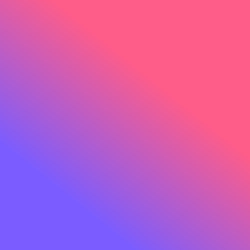

Current Rotation

Midnight Study
Lo-fi Collective
0:00
0:00
Visualizer mengikuti musik — jeda bila di-pause agar hemat CPU.
Sismul.
study lo-fiCurrent Rotation

Lo-fi Collective
Visualizer mengikuti musik — jeda bila di-pause agar hemat CPU.